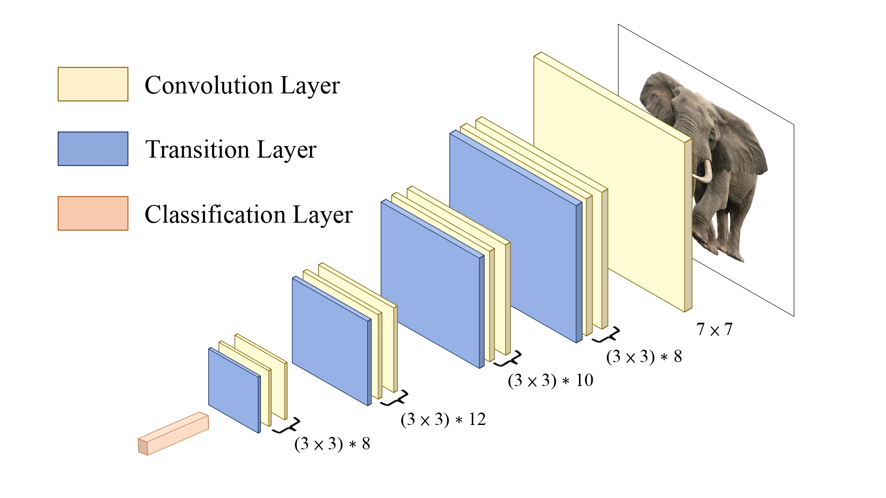
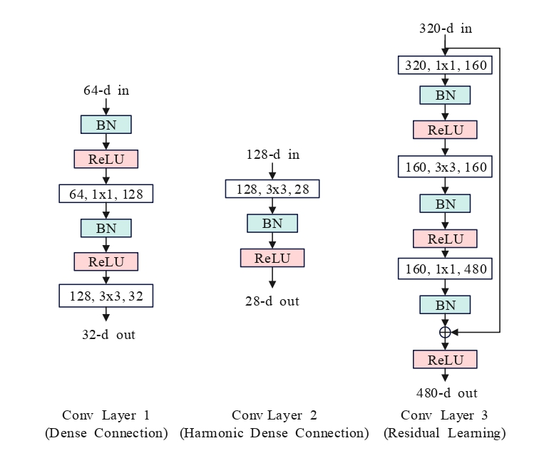
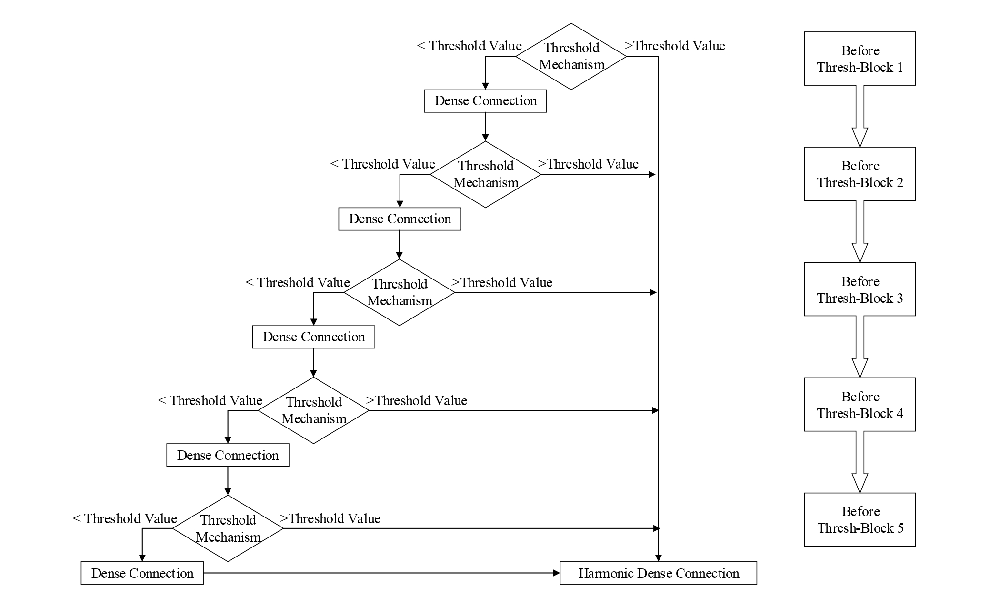

Rui-Yang Ju
 |
Rui-Yang Ju 鞠睿陽 |
About Me
I am currently (2019-present) studying in Department of Electrical and Computer Engineering (ECE)
from Tamkang University (TKU).
Since 2020, I have entered the digital image processing laboratory to conduct Computer Vision (CV) research,
advised by Prof. Jen-Shiun Chiang.
Research
- Embedded System (Raspberry Pi)
- Model Compression (Knowledge Distillation)
- Network (Convolution Neural Network, Transformer)
- Computer Vision (Image Classification, Object Detection)
Professional Memberships
- IEEE Student Member
- IET Student Member
Journals

|
Efficient Convolutional Neural Networks on Raspberry Pi for Image Classification. |

|
ThreshNet: An Efficient DenseNet using Threshold Mechanism to Reduce Connections. |
Conferences

|
Connection Reduction of DenseNet for Image Recognition. |

|
TripleNet: A Low-Parameter Network for Low Computing Power Platform. |

|
Aggregated Pyramid Vision Transformer: Split-transform-merge Strategy for Image Recognition without Convolutions. |

|
New Pruning Method Based on DenseNet Network for Image Classification. |
Projects
 |
New Algorithms for Connections between Convolutional Layers. |
 |
Novel Residual Learning Neural Networks for Raspberry Pi 4. |
 |
Improved DenseNet by Using Threshold Mechanism. |
Patents
- Rui-Yang Ju. Automatic vacuum loading device. Taiwan Patent, Utility Model No.M595589, May. 2020. [Certificate]
- Rui-Yang Ju. Automatic storage cigarette case. Taiwan Patent, Utility Model No.M576794, Mar. 2019. [Certificate]